Explore tab tour (2 steps)
1
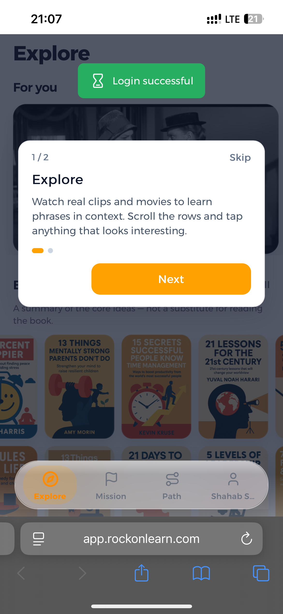
"Watch real clips" — explains scrolling rows to find lessons.
→
2
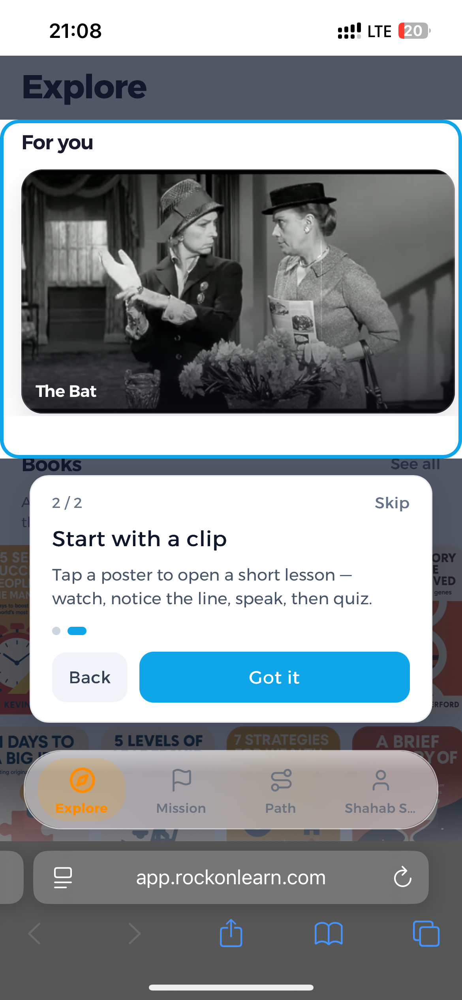
"Start with a clip" — tapping a poster opens a short watch-speak-quiz lesson.
Coach / home tour (13 steps)
1
"Welcome to Rockon" — introduces the tour of Coach, lessons, and bottom tabs.
→
2
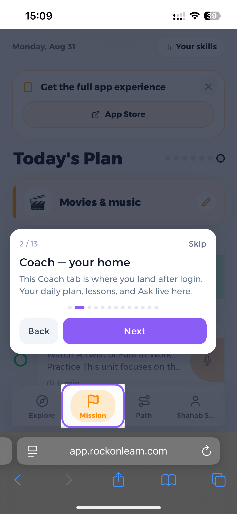
"Coach — your home" — daily plan, lessons, and Ask feature; highlights the Mission tab.
→
3
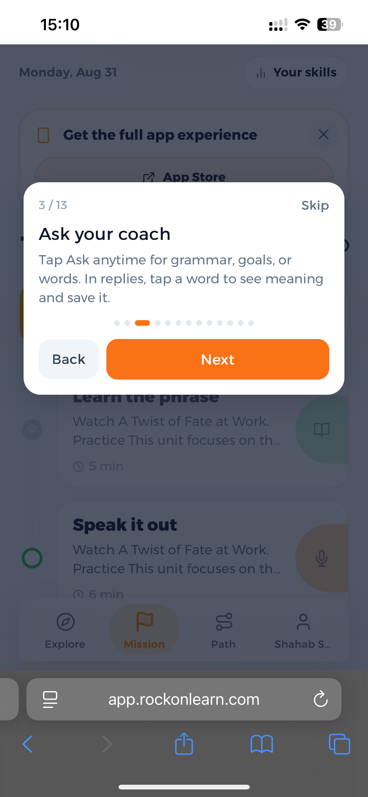
"Ask your coach" — tap Ask anytime for grammar, goals, or word help.
→
4
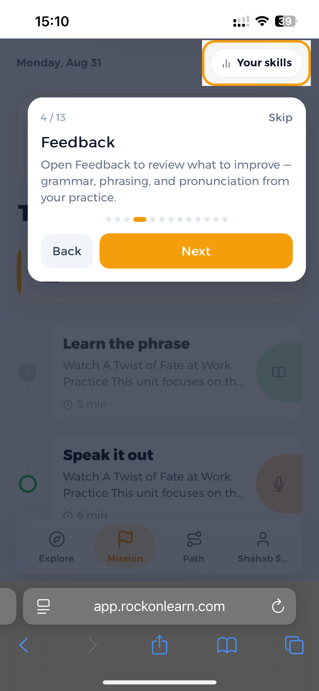
"Feedback" — reviews grammar, phrasing, and pronunciation; highlights "Your skills."
→
5
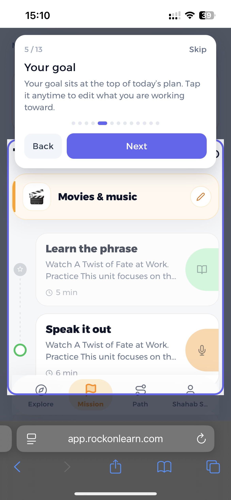
"Your goal" — the goal atop Today's Plan can be tapped to edit.
→
6
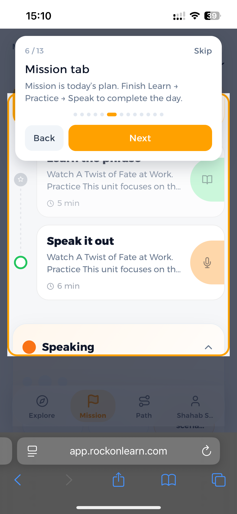
"Mission tab" — today's plan follows Learn, Practice, Speak steps.
→
7
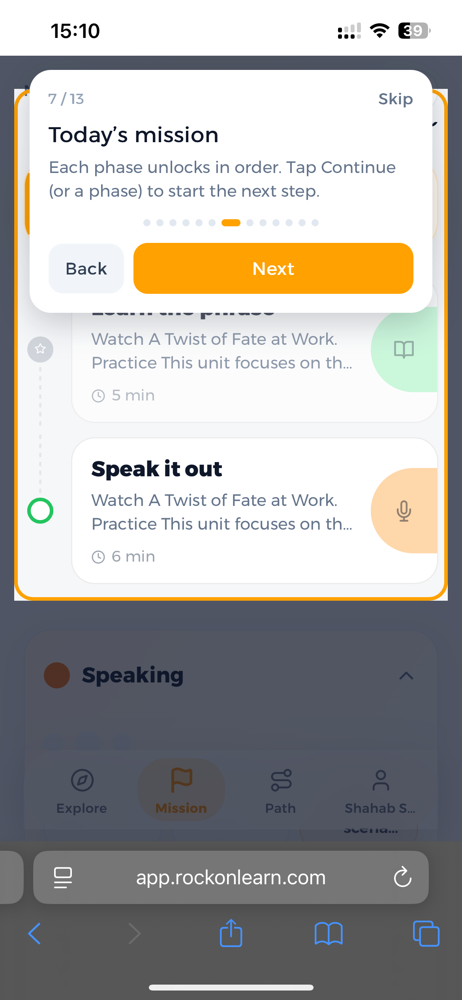
"Today's mission" — phases unlock in order; Continue starts the next step.
→
8
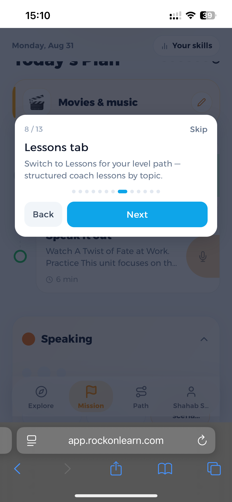
"Lessons tab" — switching to Lessons shows the structured level path by topic.
→
9
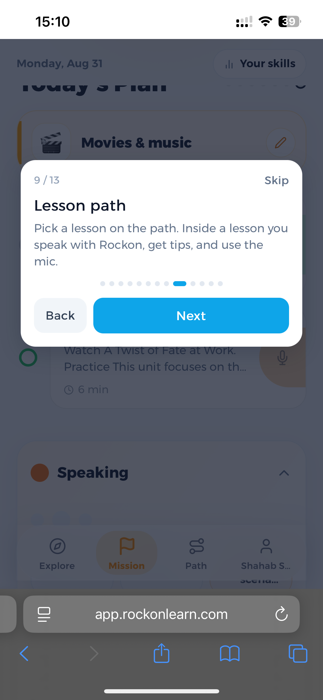
"Lesson path" — picking a lesson lets users speak with Rockon using the mic.
→
10
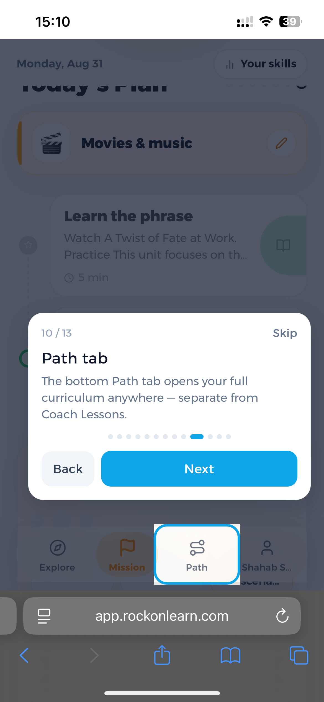
"Path tab" — the bottom Path tab opens the full curriculum.
→
11
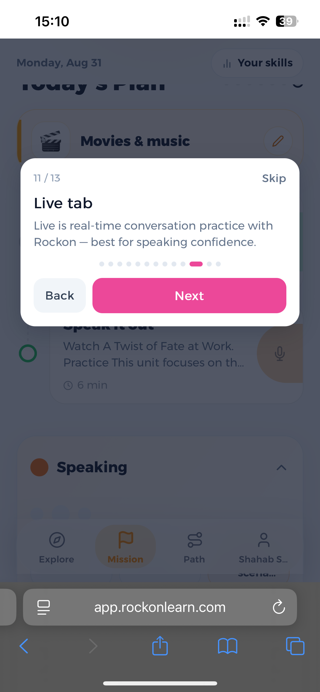
"Live tab" — real-time conversation practice with Rockon for speaking confidence.
→
12
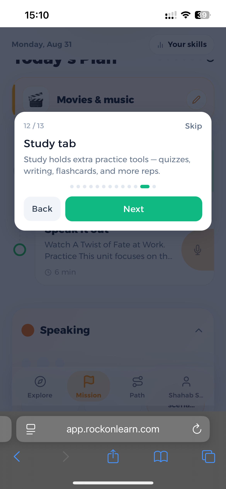
"Study tab" — extra practice tools like quizzes, writing, and flashcards.
→
13
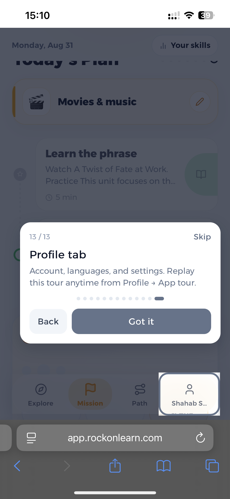
"Profile tab" — account/language settings; lets users replay the tour.
Path tab tour (2 steps)
1
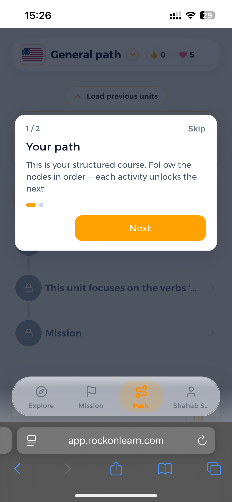
"Your path" — the structured course where nodes unlock in order.
→
2
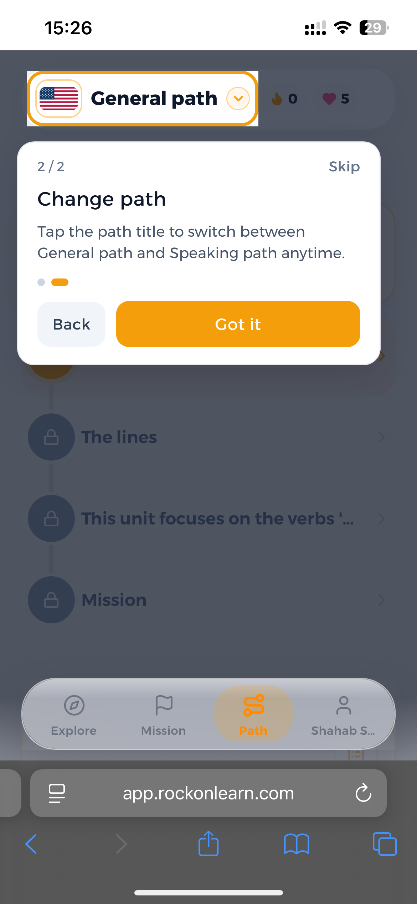
"Change path" — tapping the path title switches between General path and Speaking path.